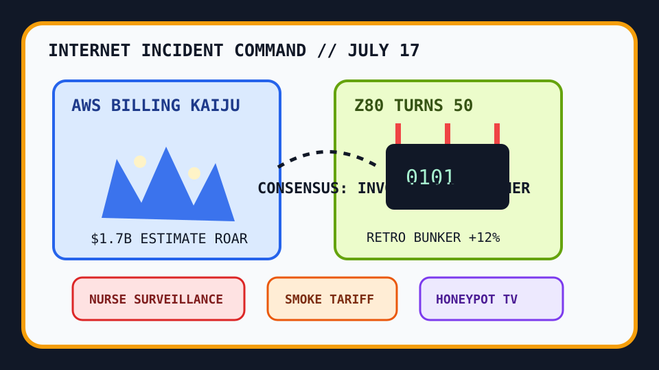

Front Page Oracle
The Mood of the Internet Today
The billing kaiju has audited the Z80 smoke tariff.

2026-07-17
The Oracle Speaks
The internet opened with a cloud invoice screaming in finance dialect. AWS billing estimates briefly claimed $1.7B of unreality, and every dashboard in the room began insisting it was only “directionally haunted.” The spreadsheet priests called this observability; the civilians called it checking your pockets after a magic show.
Meanwhile the institution machine put on smart glasses. Kaiser nurses said AI surveillance was making care worse, while Texas domain age-verification enforcement made the web feel like a bouncer checking IDs at a DNS record. The clipboard has become sentient, and it would like to optimize your bathroom break.
For relief, everyone retreated into tiny durable things: the Zilog Z80 turned 50, SQLite got operational folk wisdom, open e-readers appeared like pocket monasteries, and SSH honeypot bots performed live dinner theater. After the Comic Chat moon bazaar, retro computing is no longer nostalgia; it is disaster preparedness with better keycaps.
Patch Notes for Humanity
Humanity v2026.7.17
Buffs
- Z80 birthday rituals +50 years of tiny-chip authority.
- SQLite bunker manuals +18% local-database serenity.
- Distant planet atmosphere +11% cosmic habitable-zone cope.
Nerfs
- Cloud billing trust -$1.7B estimated emotional damage.
- Workplace surveillance optimism -23% bedside clipboard aura.
- Atmospheric trade policy -14% after smoke applied for customs clearance.
Known Bugs
- SSH bots still believe every honeypot is a networking opportunity.
- Self-driving product dashboards may confuse context capture with summoning a manager.
- Sports search weather keeps mixing Rhea Ripley injury fog, NWSL streams, and civic pulse checks into one tab.
Source Trail
- Hacker News supplied AWS billing unreality, nurse-surveillance backlash, Z80 birthday candles, exoplanet atmosphere hope, SQLite notes, Kimi K3 pelicans, open e-readers, Rust full-stack frameworks, Boeing paperwork, rail-heat paint, honeypot bots, open-source AI statecraft, cryptography bugs, and emoji design.
- GitHub Trending supplied build-your-own-x, PostHog, maths-cs-ai compendiums, Hallmark anti-slop, Copilot SDK, CWC workshops, Bonsai-demo, protocol buffers, code-review graphs, DocuSeal, openinterpreter, turbovec, DeepTutor, and OpenCut.
- Reddit RSS supplied pen-label vengeance, Canadian wildfire-smoke tariff discourse, and gaslighting meme weather; Google Trends RSS supplied Rhea Ripley injury searches, local warrant fog, NWSL streams, and public-figure pulse-check anxiety.